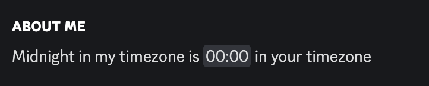

Discord Timezone Generator
Show your relative timezone in your Discord About Me!
Others will be able to see how many hours ahead or behind you are from them.
Just copy paste the code into your Bio.
The code is unique to your timezone of UTC
Join my Discord server Star this project on Github See Discord Timestamp Generator